A second full walk of the organizer journey - create, plan, import, review, assign, publish, check in - plus the public vendor surface and the signed-out screens. The pipeline is sound and the new triage and import screens are good work. What stops this being shippable is a handful of layout and colour defects that make finished screens unreadable, and a publish model expressed by five different labels that disagree with each other.
The journey completes end to end. I created a market through the UI, planned dates / tiers / locations / sections, built the application form, imported a five-row CSV, triaged every application, ran the solver, published, and checked a vendor in on a phone. Every step worked. The import reconciliation screen and the one-at-a-time review queue are genuinely well designed.
One screen is functionally broken. The Tables view - the thing an organizer reads on market day - clips 1,942px of its 2,762px of content inside an overflow:hidden box that does not scroll. On my two-day, 24-table market you can see six tables. The second day is unreachable.
Two design-system colours fail WCAG AA, and one renders white on white. --mm-grey, the hint-text colour, renders at 1.66:1. --mm-green, on every primary button in the product, renders at 2.65:1. And the phase panel's "Current Phase:" label is rgba(255,255,255,.7) on a white page - invisible, which is why the phase strip reads as four unlabelled pills.
Publishing is five different words. "Done", "Publish Results", "Publish Market", "Begin Market Days" and "Archive Market" all appear in the flow. Two of them are the same transition under different names; one of them - the primary CTA on the payoff screen - fails with a raw enum error in the phase the organizer is actually in when they reach it.
Everything below was verified in the running build with measurements or a reproduction, not inferred from source. Where I checked a suspicion and it turned out to be correct behaviour, I have said so rather than reporting it.
.tables-card is overflow:hidden with a fixed height, and .tables-body inside it is overflow:visible. Nothing scrolls. The document itself scrolls 45px and stops. On a two-date market with 12 tables per day, the organizer sees Front Row 1 through 6 of day one and nothing else - the whole of 22 November is rendered into the DOM and painted outside the clip.
.tables-card clientHeight 820, scrollHeight 2762, overflow-y: hidden · .tables-body clientHeight 671, scrollHeight 2684, overflow-y: visible · document.scrollHeight 945 vs clientHeight 900.
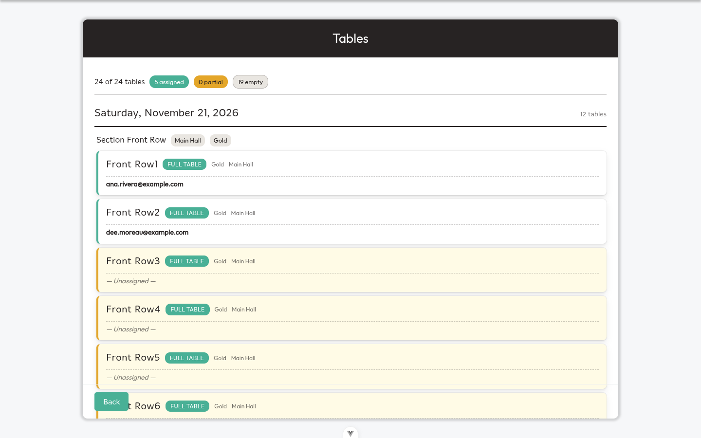
.tables-body (overflow-y:auto; min-height:0) and let .tables-card be a flex column with the header and actions row fixed. The same fixed-viewport-height card pattern is what leaves Attendance Status as a 820px white slab holding 200px of content, so fix both together.
The natural journey is: open applications, import, review, click Assign on the setup screen, land on Assignment Results, click Done. handleDone() posts toPhase: 'market_days'. But Assign never moves the phase, so the market is still applications_open, and market_days is only reachable from assignment or offers. The request 400s.
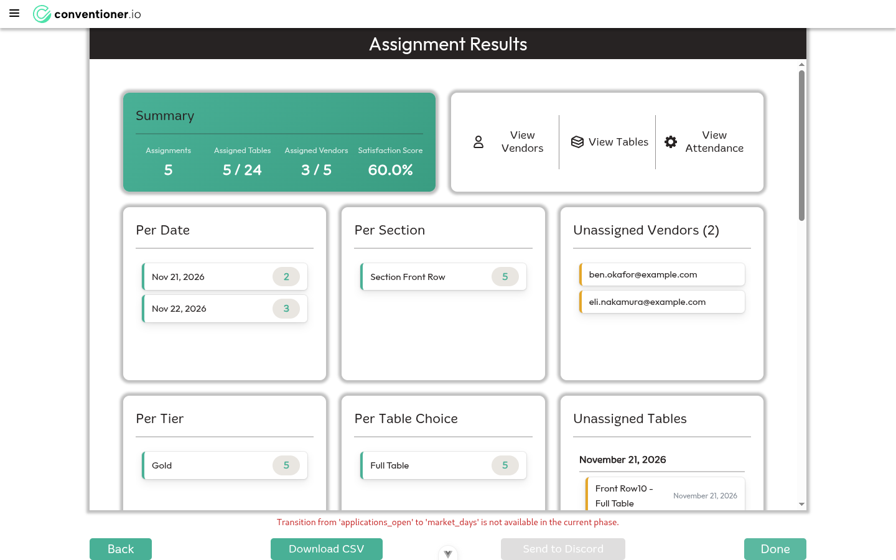
The real route is applications_closed → review → assignment → market_days, four manual clicks in the unlabelled phase strip at the top of the page. Nothing in the wizard mentions the phase strip; nothing in the phase strip mentions the wizard. They are two parallel, unconnected models of "where am I in this market".
Assign advance the phase, or have handleDone() walk the intervening transitions itself. (b) Never render a raw phase key: the transition endpoint already knows the display labels the phase strip uses ("Applications Open", "Begin Assignment") - use them, and say what to do next.
--mm-grey: rgba(39,35,35,.25)On white, rgba(39,35,35,.25) composites to roughly #C9C9C9. Contrast against the page: 1.66:1. WCAG AA requires 4.5:1 for body text and 3:1 even for large text. The token is used as a color: value in 18 places across the app, and as a border or background in 57. Corrected 19 Sep: this first read “65 places”, a count that matched border-color: and background-color: too. The token is overwhelmingly a border colour that 18 sites borrow as text, which is what makes the fix cheap: the border uses keep their value.
| Where | What is in that colour | Consequence |
|---|---|---|
| CSV import, step 2 | The FIRST ROWS sample values | The data you must read to decide the mapping |
| CSV import, step 1 | "Nothing is written until you confirm." | The reassurance that makes the step safe to take |
| CSV import, step 3 | The CSV header names in "Where each answer comes from" | Half of a two-column mapping table |
| Applications tab | "No applications received yet." | The only content on an empty screen |
| Attendance | "No check-ins recorded yet." | Ditto |
| Import gate | The entire explanation of why import is blocked | The only thing on the page |
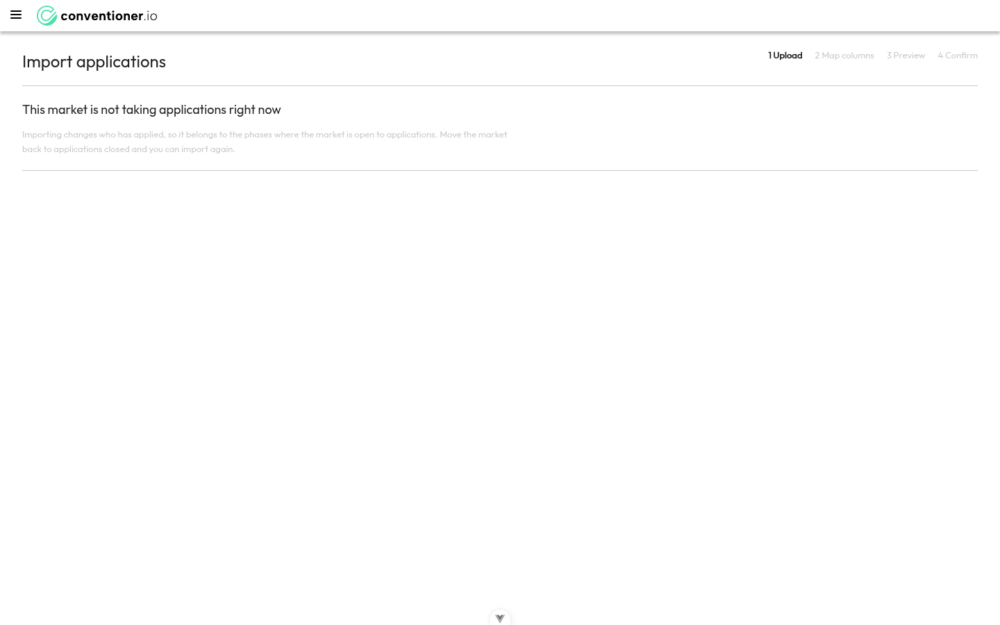
--mm-grey: rgba(39,35,35,.64). Keep the 0.25 value under a separate token for borders and dividers, which is the other half of its 160 usages and where it is perfectly fine.
--mm-black is declared twice in the same block, lines 3 and 6.)
--mm-green: #49b096 · every .primary-button, every CTA, the check-in button vendors tapMeasured on the live Check in button: foreground rgb(255,255,255), background rgb(73,176,150), 16px - 2.65:1. The same green is also used as a text colour on white (the date headings on the check-in cards, 18px), where it is the same 2.65:1.
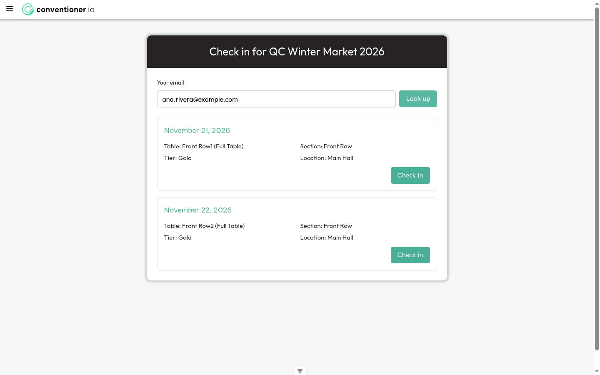
#49b096 as the brand fill, but darken the variant used behind white text and as text on white. --mm-green-dark: #2f7f6a already exists in these review artifacts and lands at 4.6:1 for white text. Two token additions, no layout change.
The phase strip has a label. It is at x:40, y:117, 93x22px, in rgba(255,255,255,.7). .phase-control-panel is background: transparent and its nearest painted ancestor is rgb(255,255,255). The panel was styled for a dark surface and is rendered on a light one.
textContent and it said "Current Phase:Applications ClosedReopen ApplicationsBegin ReviewArchive Market" - but no screenshot at any width showed the words "Current Phase". That is what led to the measurement.
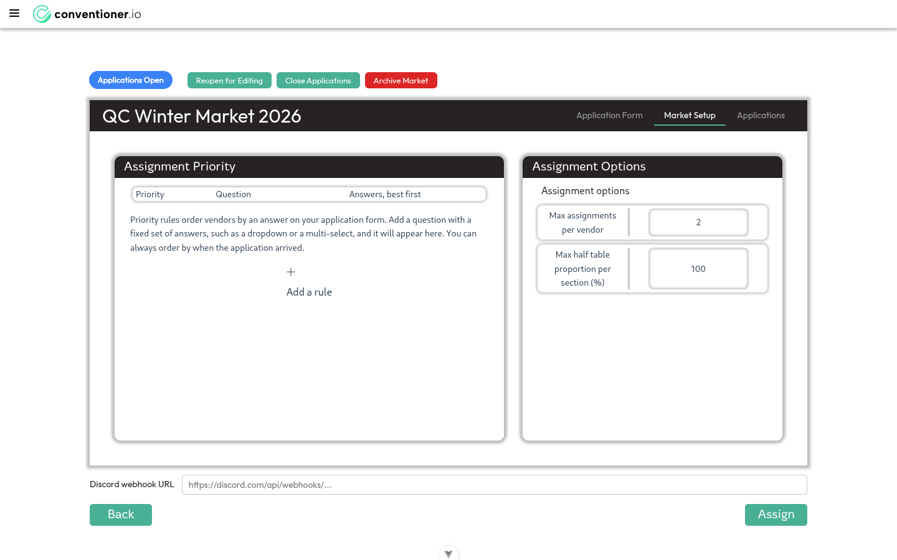
localStorage.getItem('setupPageIdx')I created a market, chose "Manual setup", and landed on Tier Setup - step 2. Step 1, Market Dates, was never shown. I only found it by pressing Back twice.
The cause: setupPageIdx is a single global localStorage key with no market id in it. Whatever step you last stood on in any market becomes the opening step of the next one. The first market an organizer ever makes is fine; every market after it opens wherever they left off.
setupObject.marketDates is empty.
Four of the six organizer routes take no parameters. They read localStorage.getItem('market'). Three observable consequences, all reproduced:
/market-setup directly. It rendered a page titled "Settings" with an empty Market Dates panel, a live Next button, and no phase strip - an editable setup wizard attached to no market.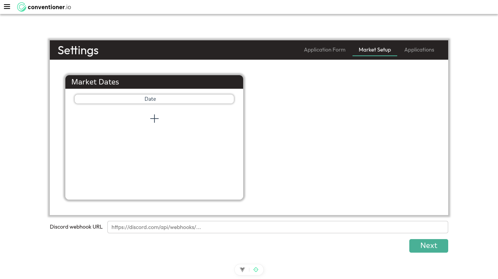
/market-setup with no current market. The title falls back to "Settings" and the wizard is fully interactive./markets/:marketId/tables and /markets/:marketId/attendance already do. If that is too large for this release, at minimum guard the no-market case: redirect to /markets rather than rendering an editable empty wizard.
My CSV carried A whole table to myself, Half a table, shared and Either is fine in the Table choice column. Those are verbatim the three options the product's own form preview shows the applicant. The importer reported all three as "did not match your market" and offered, as the resolution for each, the identical string.
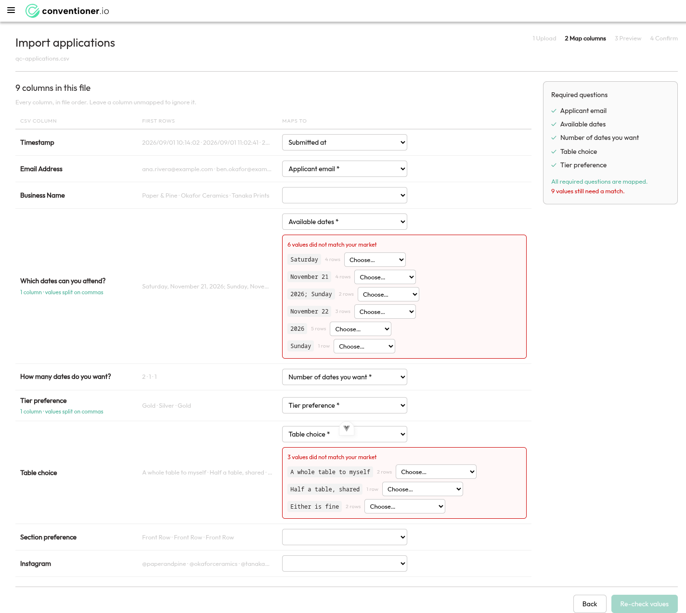
table_choice is stored as full / half / either and the comparison is against the key, not the label.The same screen shows a second instance. A single column mapped to a multi-value target is split on commas, with no way to change the delimiter - and Google Forms date labels contain commas. "Saturday, November 21, 2026; Sunday, November 22, 2026" became six fragments: Saturday, November 21, 2026; Sunday, November 22, 2026, Sunday. Meanwhile the values it offers as the valid targets are 2026-11-21 and 2026-11-22, which is a format the product shows the organizer nowhere else.
I checked two adjacent suspicions and both turned out to be correct behaviour, so I am not reporting them: the limited auto-mapping is a documented decision in suggested_mapping() with a stated rationale, and "Section preference" is correctly absent as a target because a ranking of one section is not asked.
| Label | Where | What it actually does | Confirms? |
|---|---|---|---|
| Done | Assignment Results, bottom right | → market_days | No |
| Publish Market | Phase strip, in assignment | → market_days (the same thing) | Yes |
| Begin Market Days | The dialog that "Publish Market" opens | The confirm button for the above | - |
| Publish Results | Applications tab, top right | A different endpoint entirely | No |
| Archive Market | Phase strip, red, every phase | → archived | No |
"Done" reads like "I have finished looking at this screen" and is styled identically to "Back" beside it; it is in fact the publish action, unconfirmed. "Publish Results" is enabled on a market with zero applications and zero assignment, and nothing on screen says what "results" means. The one control that does confirm opens a dialog whose copy is about pending offers and refusals - a concept the MVP organizer has never met - and whose confirm button is styled red, as though publishing were destructive.
And after all that, the Markets list does not show that a market is live. My published market renders identically to a draft: Created | Organization | Your role | Open | Manage. No phase, no badge. The one fact that matters most about a market is the one the list omits.
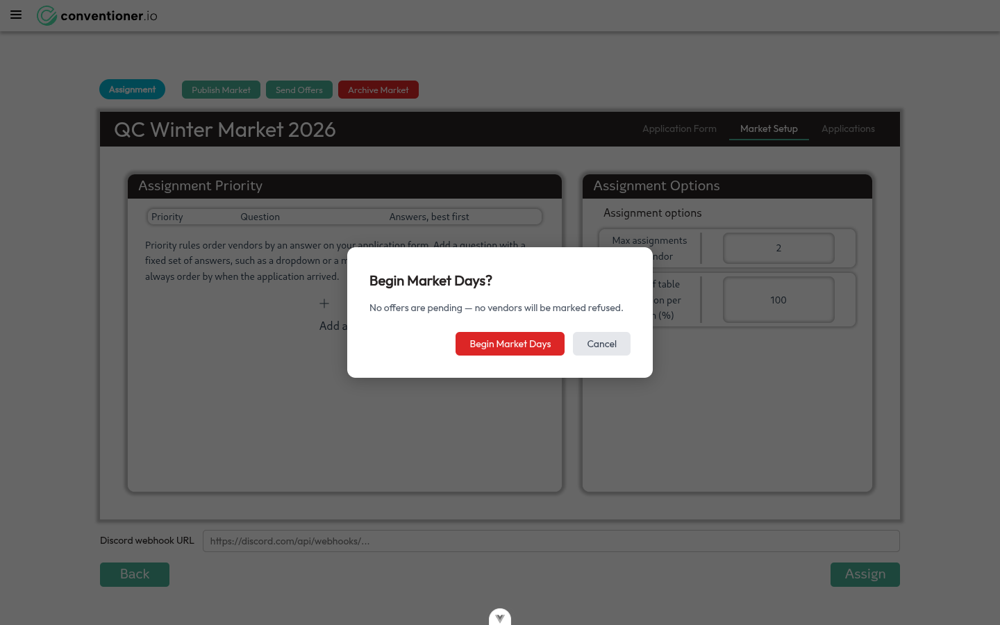
/qc-winter-market-2026/check-in and nothing in the product tells the organizer that URL exists, let alone shows it to them to share with their door staff.My run: 5 applications, 5 approved, 3 assigned, 19 of 24 table-slots free, two vendors unplaced. The screen lists the two email addresses under a heading and says nothing else. The reason is that both asked for Silver and my only section is Gold - which is knowable, and is exactly the kind of mistake an organizer makes when planning tiers.
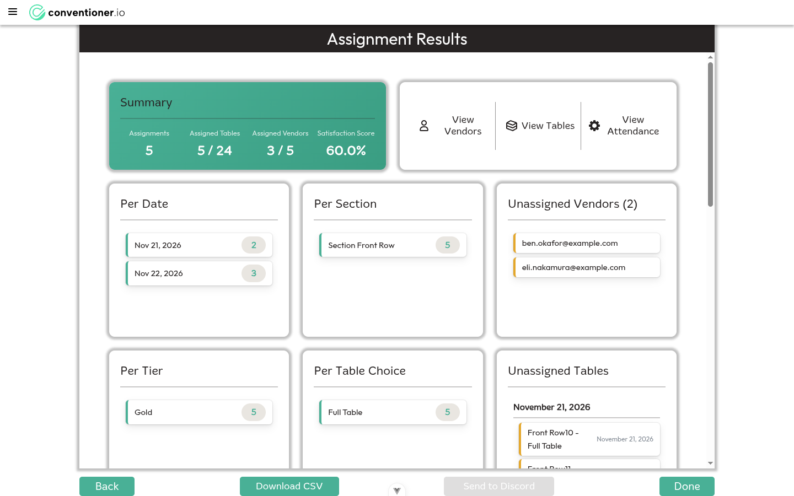
Three smaller things on the same screen:
The one-at-a-time triage queue is good: keyboard shortcuts, a running tally, an honest amber note, and a "Show N reviewed" list with a working reversal. But there is no bulk approve control, which was named in E04's scope, and its absence bites hardest in exactly the case the amber note describes - "every application reads alike and there is nothing here to tell applicants apart". The seeded 232-vendor market would be 232 clicks.
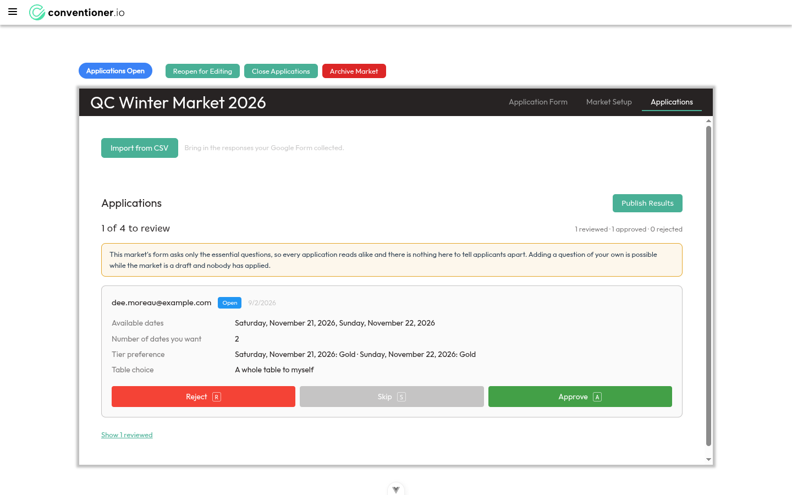
Reject is also full-width-third, the same visual weight as Approve, and positioned first in reading order. On a repetitive click task with a panel that jumps 15px on the first action, that is a misclick waiting to happen.
Three defects visible in one screenshot, on the rows an organizer uses to build every tier, location and section.
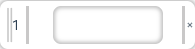
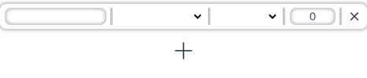
icon-close-round declares 24x24 and renders 8x20 inside a 10px flex cell on tier and location rows. The same icon on a section row renders correctly at 24x24 - the two sit side by side on one screen.selectedIndex: -1 - the "Select a location" placeholder option exists but is not selected, so the control shows nothing at all, has no border, and does not read as a control.<div> with cursor:auto, tabIndex -1, no role and no accessible name, in a 10px-wide hit target.The identical selectedIndex: -1 bug appears on the CSV import mapping screen: every unmapped column's "MAPS TO" select is blank rather than showing "Ignore this column", because columnTarget[index] is undefined rather than ''.
The "Created: / Organization: / Your role:" block is laid out after the market name rather than in a fixed column, so its left edge follows the name's width. Measured x of the "Created:" label down the Markets list: 289, 339, 345, 393, 336, 327, 327, 323.
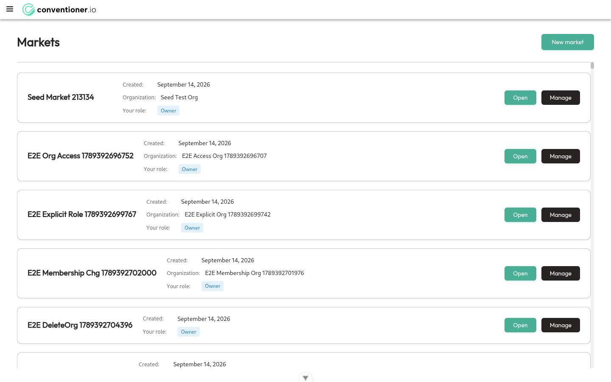
The Organizations list has the same jitter, and between the two lists the role badge is capitalised differently - Owner on Markets, owner on Organizations, Owner again inside the Manage dialog.
MarketSummaryRow component with a real grid, used by all four call sites. That also settles the casing.
.detail-panel--open in place. Has an X.padding: 0, visually identical enabled and disabled.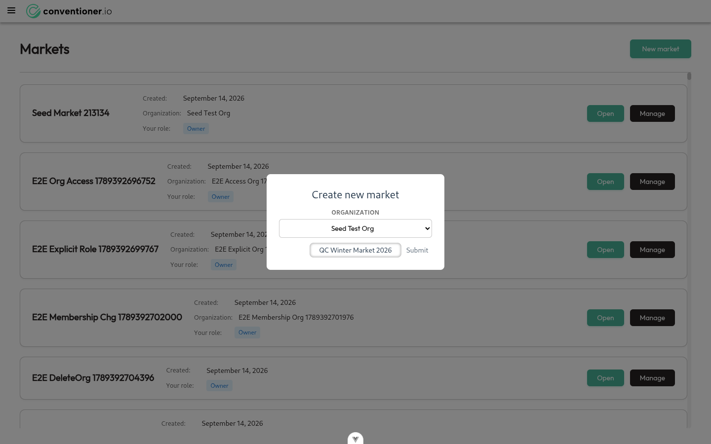
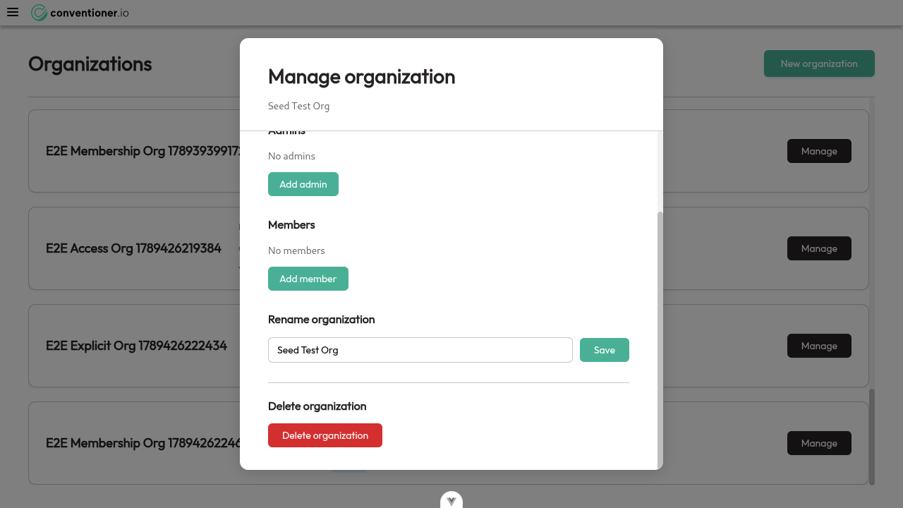
draft the organizer needs to move forward, and applications_closed is not among the two transitions the phase strip offers them. The message is written for one direction and shown for both.I verified that /qc-winter-market-2026 returning "Page not found" for a live CSV-intake market is the documented intake-mode gate working correctly, not a bug. It is worth noting as a UX consequence though: a vendor who trims /check-in off the URL they were given is told the market does not exist.
| Screen | Rendering |
|---|---|
| Market Dates editor | Saturday, November 21 ← no year |
| Import preview, applicant card | Saturday, November 21, 2026 |
| Import value reconciliation | 2026-11-21 |
| Assignment Results, Per Date | Nov 21, 2026 |
| Assignment Results, Unassigned Tables | November 21, 2026 (300px away from the line above) |
| Triage card, submitted | 9/3/2026 |
| Check-in confirmation | 9/15/2026, 7:20:18 AM ← seconds |
The first row is the defect: a market date in the editor shows no year, so a 2026 market and a 2025 market are indistinguishable at the point where you type them in. The rest is consistency.
I typed 99 into "Max assignments per vendor" and it became 2 - the number of market dates - with no message. I typed 150 into "Max half table proportion per section (%)" and it became 100 on blur, also silently. Both fields are type="text" with no min/max, so there is no numeric keyboard on a phone and no browser-level validation either.
Neither field has help text, a placeholder, a default, or an explanation of what a "half table proportion" is - and the Assign button is disabled until both are filled, so the organizer must guess at two undefined numbers before they can proceed.
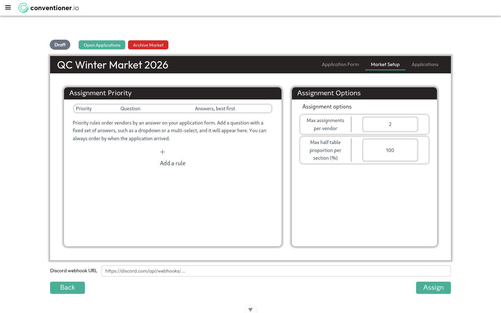
Unticking "Ask this" on Section preference fires PUT /markets/:id/application-form immediately. I confirmed the 200 in the network log. Nothing on screen acknowledged it - no "Saved", no spinner, no change of state. Six inches away, custom fields require an explicit Save Form click with a status message.
The organizer has no way to know which of their changes are already persisted. (I initially read the disabled Save Form button as "this change cannot be saved" - it can, by a different path, which is precisely the problem.)
The Form Builder is otherwise the best-designed screen in the product: the essential-questions explanation, the live applicant preview and the amber note about table types are all excellent. Its two panels are 484px and 519px tall inside a 900px window with 300px of empty page below them, though, so both scroll when they need not.
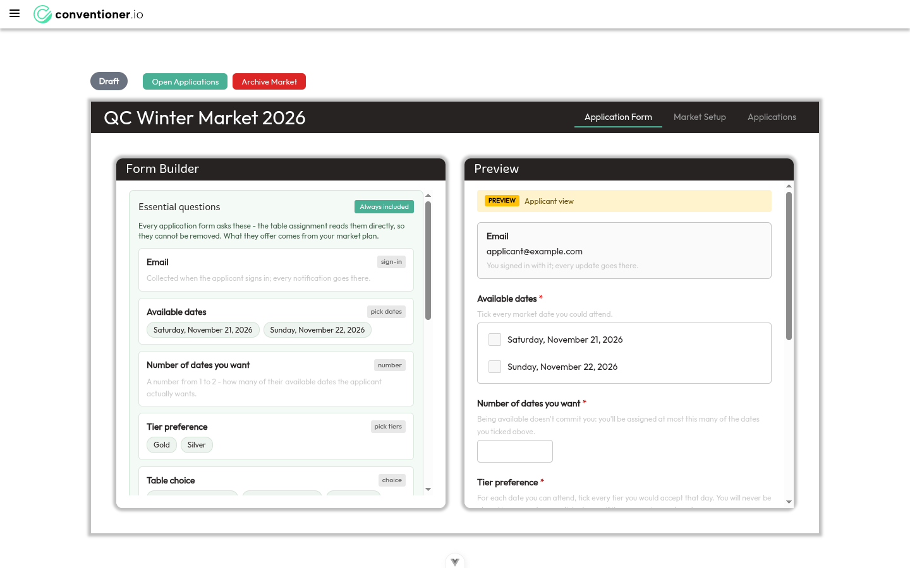
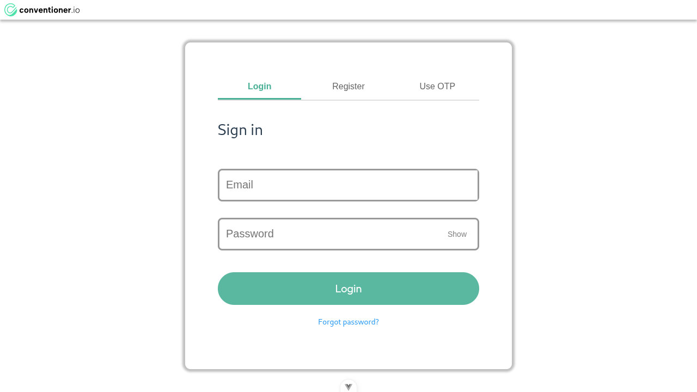
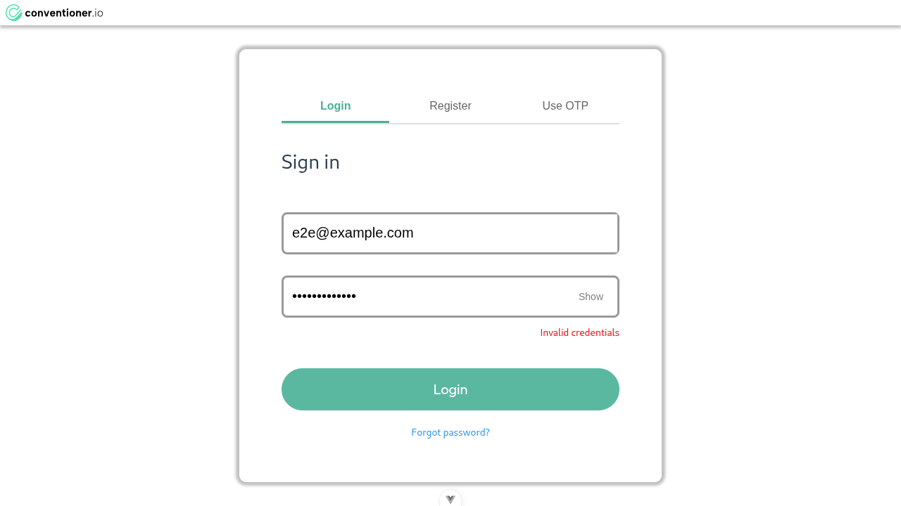
#2196F3, the only blue in the product, at 3.14:1 on white.role="alert" and no pointer to the reset link directly below it.<h3> in a <div> with tabIndex -1 - not a button, not a link, not focusable. A keyboard user cannot sign out from the drawer. (The dashboard's is inside a real button, but is labelled "Sign out" - different casing.)At 1280x720 - the width E08/F01 targeted - the "View Attendance" label breaks mid-word into "View Attendan / ce". Its container sets overflow-wrap: anywhere, which is the wrong property for a two-word English label.
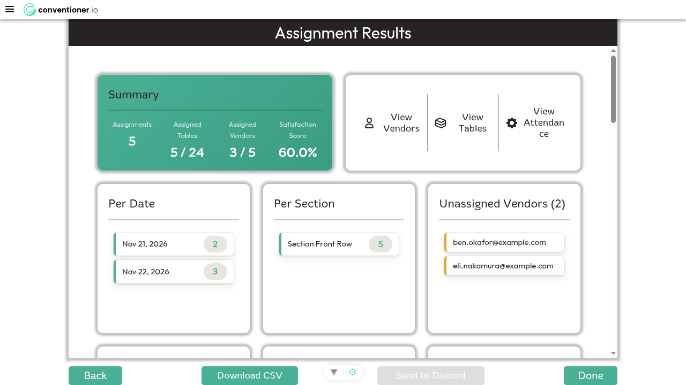
Several screens also stack scroll contexts: on Vendors the page scrolls 945/900 while the list inside it scrolls 14,374/540, so the wheel does different things depending on where the pointer is. Markets and Organizations do the same. The Assignment Results single inner scroller is the right pattern - apply it consistently.
Every row in the vendor list, every unassigned-vendor entry on the payoff screen, and every occupied table on the Tables view identifies the vendor by email address alone. The search box is "Filter by email...". My CSV carried a Business Name column and there is nowhere to map it, so a market of 232 vendors is a list of 232 gmail addresses.
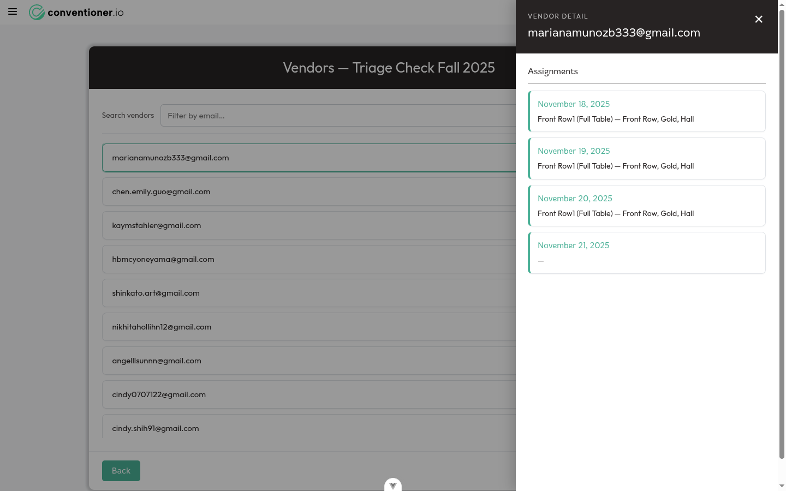
full (storage).title attribute, invisible on touch.Method: Playwright MCP against the running conventioner-dev stack on branch fix/authorization-integrity. One market built from scratch through the UI, five applications imported from a hand-written CSV, full triage, solve, publish and check-in. Screens checked at 1440x900, 1280x720 and 390x844. Contrast figures computed from live getComputedStyle values using the WCAG 2.x relative-luminance formula. Every measurement quoted above was taken from the running build. The dev database was not reset, so pre-existing e2e fixture markets remain in the lists shown in some screenshots.